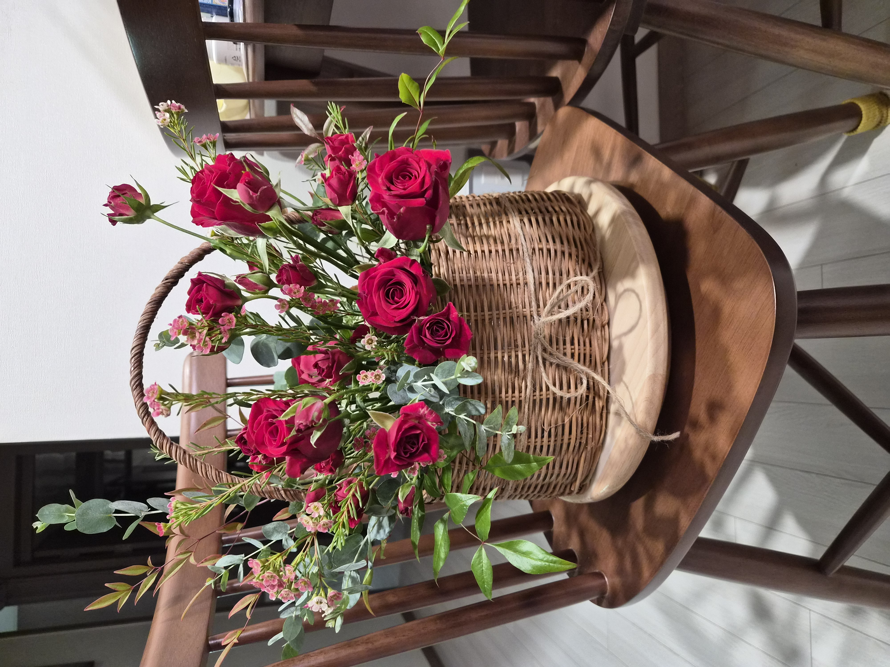
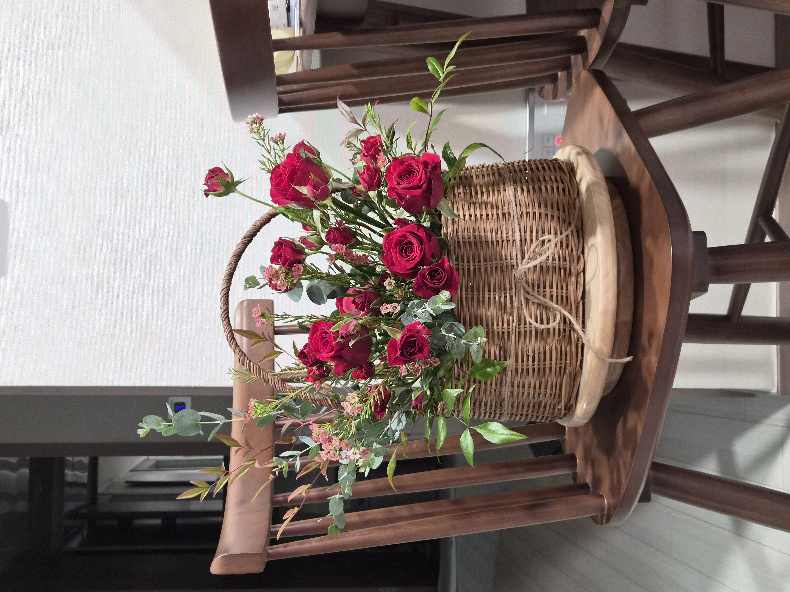
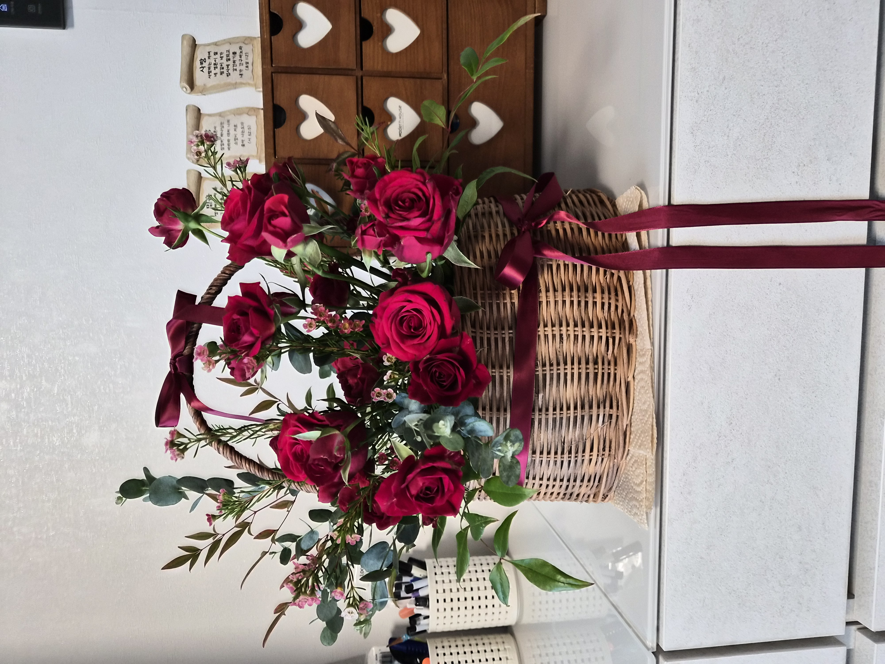
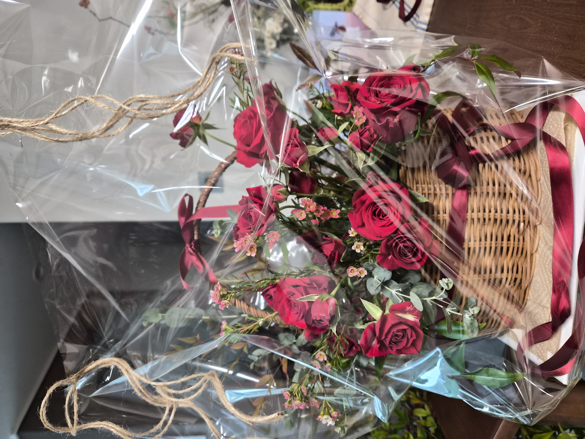

SELF-DIRECTED · BASKET ARRANGEMENT
2026.10.30Burgundy Garden
Basket
深い赤と枝葉が重なる秋の庭
02 / SELF-DIRECTED
CONCEPT
Deep reds,
natural movement.
어머니의 생신 선물을 위해 직접 기획하고 제작한 플라워 바스켓입니다. 버건디와 와인 레드 계열의 장미를 중심으로, 핑크빛 왁스플라워와 회녹색 그린을 조합해 깊이 있는 가을 정원의 색감을 표현하고자 했습니다.
남천과 유칼립투스의 뻗는 선을 활용해 비대칭 흐름과 여백을 만들고, 장미의 볼륨이 그 아래에서 자연스럽게 이어지도록 구성했습니다. 소재 선정과 사입, 컨디셔닝, 플로랄폼 세팅부터 제작과 마감까지 전 과정을 직접 진행했습니다.
母の誕生日に向けて、花材の選定から仕入れ、下処理、制作までを自分で行ったバスケットアレンジです。深みのある赤いバラに小花とグレイッシュなグリーンを重ね、枝葉のラインが自然に広がる秋の庭をイメージしました。
COLOR PALETTE
色の構成
Deep burgundy,
rose red,
muted greens.
푸에고 장미의 짙은 버건디와 스프레이장미의 레드 톤을 중심으로, 왁스플라워의 부드러운 핑크를 작은 포인트로 더했습니다. 구니의 회녹색과 남천의 녹색·붉은 기가 도는 잎을 함께 사용해 선명한 꽃 색감의 무게를 조절했습니다.
深いバーガンディとローズレッドを主役に、ワックスフラワーの柔らかなピンクを加えました。ユーカリの灰緑色とナンテンの葉色が、赤い花の印象をやわらげています。
DEEP BURGUNDY
#751C3CROSE RED
#BA2850WAX PINK
#D9899CGREYISH GREEN
#8C9B90NANDINA GREEN
#69785EMATERIALS
使用花材
주 소재로 푸에고 장미와 비슷한 계열의 스프레이장미를 선택하고, 왁스플라워로 작은 꽃의 리듬을 더했습니다. 남천은 뻗는 선과 잎의 색감을, 유칼립투스 구니는 둥근 잎의 질감과 회녹색의 대비를 위해 사용했습니다.
フエゴのバラと赤系のスプレーバラを主役に、ワックスフラワーで小花のリズムを加えました。ナンテンの枝でラインをつくり、ユーカリ・グニーの丸い葉と灰緑色で質感の変化をつけています。
푸에고 장미
バラ（フエゴ）
스프레이장미(레드 계열)
スプレーバラ（赤系）
왁스플라워(레드)
ワックスフラワー（レッド）
남천
ナンテン
유칼립투스 구니
ユーカリ（グニー）
Burgundy · Rose Red
Wax Pink · Greyish Green
深い赤とやわらかなピンク、
灰緑色を重ねた配色。
COMPOSITION
構成とバランス
FORM,
LINE,
BALANCE.
남천과 구니로 상단과 좌측의 움직임을 먼저 정하고, 장미를 전면과 우측 하단을 중심으로 배치해 선과 매스가 대비되도록 시도했습니다.
푸에고 장미 사이에 스프레이장미와 왁스플라워를 넣어 크기와 질감의 차이를 만들었습니다. 바스켓 손잡이의 곡선도 전체 실루엣의 일부로 남겨두었습니다.
플로랄폼을 가리고 전체 균형을 조정하는 과정에서 중간 부분의 소재 밀도가 높아져, 처음 의도했던 긴 라인과 여백이 다소 줄어들었습니다. 이 변화도 제작 과정의 중요한 기록으로 남겼습니다.
ナンテンとユーカリで上方と左側への流れをつくり、バラの量感を前面から右下に配置しました。小花で花の間をつなぐ一方、フォームを隠すために花材を加える過程で、当初意図したラインと余白が少なくなった点が今後の課題です。
FINAL VIEW
完成したかたち



짙은 레드 장미와 분홍빛 소화류, 서로 다른 잎의 질감이 어우러진 완성 형태를 기록했습니다. 바스켓의 자연스러운 소재감은 살리고, 선물 전달을 위한 버건디 리본과 투명 포장까지 함께 남겼습니다.
深い赤のバラと小花、異なる葉の質感が重なる完成形です。バスケットの自然な風合いを生かし、贈り物としてリボンと透明ラッピングを施した様子も記録しました。
REFLECTION
制作を振り返って
Color in harmony,
space to refine.
컬러 팔레트와 주요 소재를 직접 선택하고 사입부터 컨디셔닝, 형태 구성, 마감까지 혼자 진행했다는 점에서 의미 있는 작업이었습니다. 장미의 붉은 계열과 그린의 질감은 구상했던 분위기에 가깝게 연결되었습니다.
다만 폼을 가리고 균형을 맞추는 과정에서 꽃과 필러를 추가하면서 밀도가 높아졌고, 라인의 길이와 여백이 계획보다 약해졌습니다. 다음에는 폼 커버를 낮은 영역에서 해결하고, 비워둘 공간을 미리 정해 끝까지 유지하고자 합니다.
花材選びから仕入れ、下処理、制作までを一人で行い、色と質感の組み合わせを形にできたことが収穫でした。一方、フォームを隠しながらバランスを整えるうちに密度が高くなり、ラインと余白が弱まったため、次回は低い位置でフォームをカバーし、空間を意識して構成したいです。
폼 커버와 공간 구성을 분리해 생각하고, 긴 라인과 비대칭 여백을 끝까지 유지하기.